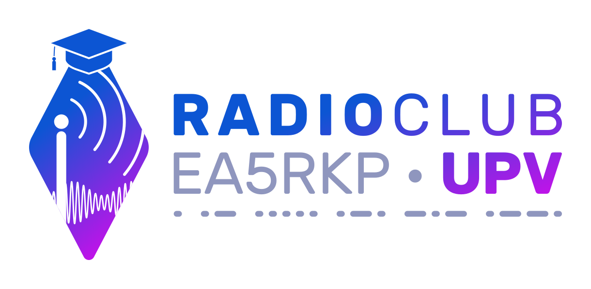
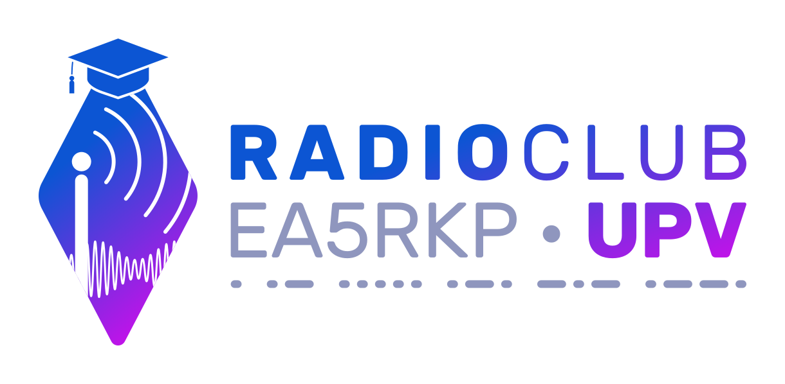
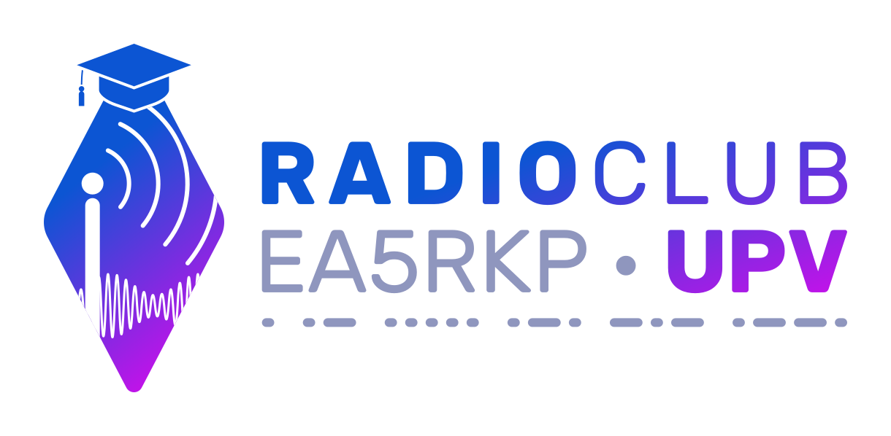

EA5JTT en QRZ
EA5JTT en BlueSky
El blog de EA5JTT
Estación terrenal TinyGS
WSPR RX de EA5JTT
WSPR TX de EA5JTT
El github de joanpao - EA5JTT

Radioclub de la UPV - EA5RKP
El blog del radioclub de la UPV - EA5RKP
EA5RKP en BlueSky
EA5RKP en Instagram
WSPR TX de EA5RKP
 
